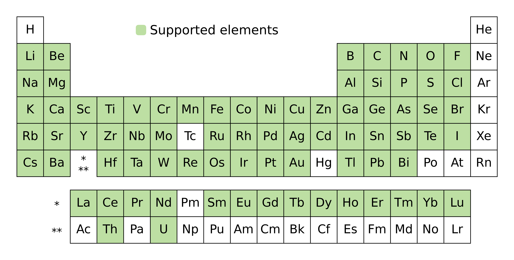

Composition Analyzer/Featurizer (CAF)


Composition Analyzer/Featurizer (CAF) offers a user-interactive Python script that provides tools for generating compositional descriptors of binary, ternary, and quaternary compounds from Excel or .cif files. CAF also offers utility functions to filter, sort chemical formulas, and merge Excel files.
Citation
If you use CAF in your scientific publication, please cite the following:
Digital Discovery. https://doi.org/10.1039/D4DD00332B
as well as the Oliynyk elemental property dataset (OLED) used in CAF:
Data in Brief. https://doi.org/10.1016/j.dib.2024.110178
Publications and scientific utility
In the above Digital Discovery paper, we describe the performance of CAF in combination with SAF for generating compositional and structural numerical features for ML applications in crystal classification of binary compounds. The results are shown in Figures 1 and 2 below, we compare the performance of our developments (CAF and SAF) with existing feature generation methods such as JARVIS, MAGPIE, mat2vec, and OLED.

Note
Figure 1: PLS-DA latent value plot using the first two latent value dimensions: (a) JARVIS, (b) MAGPIE, (c) mat2vec, (d) OLED (all sets of features were generated with CBFV), and our developments – (e) CAF and (f) SAF.

Note
Figure 2: SAF + CAF PLS-DA plot.
See also
What’s the differecne between CAF and SAF? CAF generates compositional features based on chemical formulas, while SAF generates structural features based on crystal structures (CIF files). You can learn more about SAF in https://bobleesj.github.io/structure-analyzer-featurizer/.
How CAF works
For a given chemical formula, CAF determines the number of unique elements and categorizes them into binary, ternary, or quaternary compounds. It then generates a set of compositional features based on the chemical formula:
133 binary features
204 ternary features
305 quaternary features
The full lists of CAF features are provided in the Features page.
See also
The
CAFfeatures are based on the Oliynyk elemental property dataset (OLED). OLED can be accessed through thebobleesj.utilsPython package. You can also download the Excel file from GitHub. Click Download raw file button to download the Excel file.
Publications using CAF or Oliynyk elemental property
Here is a list of publications using CAF for materials analysis and data-driven materials synthesis:
Getting started
You can generate compositional features without writing any code. Please visit Getting started to learn how to generate features.
Scope
There are two constraints. First, formulas of either binary, ternary, or quaternary compounds are supported. Second, formulas containing the elements in blue below are supported:
5 Options provided in CAF App
The recommended way to generate features is using the CAF interactive application. Beyond generating features from a list of formulas listed in an Excel file under the “Formula” column, there are other utility options that can help you filter, sort, and merge Excel files which are used for generating features and handling data.

How to ask for help
Do you have any feature requests? Please feel free to open an issue on GitHub using the
Bug Report or Feature Requesttemplate.Do you have any questions about running the code? Please feel free to reach out to Sangjoon Bob Lee at bobleesj@gmail.com.
Do you want to learn how to publish scientific software?
CAFis developed and maintained using the Level 5 package standards provided in scikit-package.
How you can contribute to CAF
Did you find CAF helpful? You can show support by starring the GitHub repository and recommending it to colleagues.
Did you find any bugs? Please feel free to report it by creating a new issue so that we can fix it as soon as possible.-
See also
Do you want to learn how to use GitHub and develop Python package to reuse your code? Please feel free to reach out to Sasngjoon Bob Lee (bobleesj@gmail.com). There are resources you can use to get started such as scikit-package.
Acknowledgements
CAF is built and maintained with scikit-package.